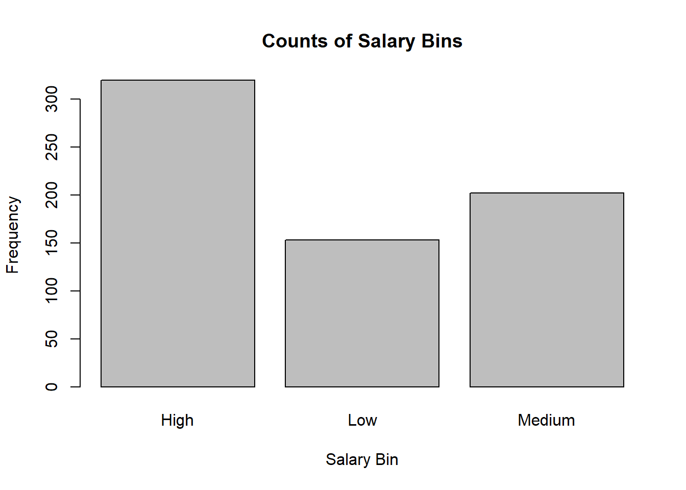

The statistical topic this module will cover is ORDINAL LOGISTIC REGRESSION as applied to BASKETBALL! When we can’t model phenomena as a binary outcome with logistic regression and instead must expand potential response variables by their level (low, medium, high or small, medium, large), we can use ordinal logistic regression. Ordinal logistic regression also makes more efficient use of data by treating it as nominal (think levels) instead of numeric (think linear regression).
Sports Context
We will apply Ordinal Logistic Regression into predicting the best salary to pay NBA players based on their previous skill. Every year, teams in the NBA assign contracts to players based on their previous performance. It’s important for NBA teams, who hire data scientists, to strike a balance between properly compensating players for their skill and also reserving money and staying under budget. However, learners should have an upfront understanding of the limitations of our model: it does not account for rookie players, and only applies to players who are no longer on rookie contracts. We wanted to keep this as simple as possible for those trying to understand Ordinal Logistic Regression.
LEARNING GOALS.
A list of the learning outcomes for those that complete the module.
By the end of this module, students ought to be able to:
Understand how Ordinal Logistic Regression will be applied to an NBA dataset and predicting NBA salary.
Understand the Theory and Application of Ordinal Logistic Regression (OLR).
Prepare data for OLR.
Construct an OLR model in R using relevant variables from an NBA data set.
Interpret OLR model coefficients and their implications for predicting NBA salary.
Apply OLR to predict salary and evaluate your model’s performance.
INTRODUCTION
Sports Application
Each year, the NBA as a whole makes upwards of $10.58 billion in revenue. WOW! Have you ever wondered where all of this money goes or how teams determine how much money each player gets paid? Believe it or not, the allocation of this funding based on the relevant skills and talents of the players is important for nurturing player development while ensuring the NBA’s competitive balance. Over time, in order to have a good team and thus make more money, owners and general managers must compensate their players adequately so that they do not join other teams. However, teams must have enough money for self-sustainment and funding events. As such, the unique balance arises whereby teams must pay players just enough to satisfy them while ensuring that the team makes a profit off of their games and events.
As a preliminary measure of finding the best salary to pay players based on previous skill, we aim to determine which factors can predict the bin of an NBA salary. As such, this bin will have three levels: low, medium, and high. We feel that this model is a precursor to someone understanding how NBA teams ensure efficiency of monetary allocation and thus team financial success.
Statistical Technique
Ordinal Logistic Regression is a form of Logistic Regression in which one can model a relationship between an ordinal response variable (NBA salary bin: low, medium, high) and one or more explanatory variables (player statistics, performance, and more).
What about Logistic Regression?
It’s important to also understand before we get started that logistic regression essentially estimates the probability of an event occurring, such as whether someone does something or not. In contrast to linear regression, logistic regression has a binary (or more than two binned) response variable.
Why Ordinal Regression Here?
The difference between Ordinal and Logistic Regression is that in ordinal, the response variable has a specific order. For example, in this case, the “order” is “low, medium, and high” salary. Another example of this might be survey responses: for example, “bad, alright, awesome” which need to be in the correct order and are also not numerically spaced. One final example would be predicting the stages of a disease. For example, in trying to predict the stages of cancer based on previous patient data, order of predictions would matter because such order informs the level of metastasis of the cancer. As you can probably tell, Ordinal Logistic regression is more complex than normal logistic regression due to the nature of having multiple categories and thus thresholds.
Instructions
In this module, you will use R and its associated packages to perform Ordinal Logistic Regression. Follow along below. Some code will be given to you and some you will have to determine for yourself. The steps should logically flow. Make sure you complete all steps in order so that you are not confused from skipping around.
First, we need to load the required packages. You may need to install packages. If that is the case, uncomment the install packages line of code below and insert the necessary packages that you need to download.
library(tidyverse)
── Attaching core tidyverse packages ──────────────────────── tidyverse 2.0.0 ──
✔ dplyr 1.1.4 ✔ readr 2.1.5
✔ forcats 1.0.0 ✔ stringr 1.5.1
✔ ggplot2 3.5.1 ✔ tibble 3.2.1
✔ lubridate 1.9.3 ✔ tidyr 1.3.1
✔ purrr 1.0.2
── Conflicts ────────────────────────────────────────── tidyverse_conflicts() ──
✖ dplyr::filter() masks stats::filter()
✖ dplyr::lag() masks stats::lag()
ℹ Use the conflicted package (<http://conflicted.r-lib.org/>) to force all conflicts to become errors
We will now read the NBA data. The data is linked at the following cite which also has an explanation of what the variables in the data mean and various ways to analyze it. See below:
The data on NBA players contains information on various measurables in professional basketball from the 2021-2022 NBA regular season. It contains 812 player-team stints for the season, meaning that there are 812 individual observations. Were a player to have played for multiple teams in the given season, they are recorded as unique observations. This is an advantage for ordinal logistic regression because we are looking to see the factors that determine the bin of a player’s salary. It is worth noting that this dataset is already “cleaned” in the sense that there are no missing, or NA, values. However, for your awareness, it is worth noting that NBA data is collected by Second Spectrum softward which tracks the movements of each player on the court and the basketball 25 times per second! Let’s go ahead and load in the data.
bball <-read_csv("NBA_Data.csv")
Rows: 1264 Columns: 83
── Column specification ────────────────────────────────────────────────────────
Delimiter: ","
chr (3): Player, Tm, Season S-1
dbl (80): Age, G, GS, MP_per_game, FG_per_game, FGA_per_game, FG%_per_game, ...
ℹ Use `spec()` to retrieve the full column specification for this data.
ℹ Specify the column types or set `show_col_types = FALSE` to quiet this message.
kable(head(bball[, 1:7]))
Player
Age
Tm
G
GS
MP_per_game
FG_per_game
Precious Achiuwa
23
TOR
55
12
20.7
3.6
Steven Adams
29
MEM
42
42
27.0
3.7
Bam Adebayo
25
MIA
75
75
34.6
8.0
Ochai Agbaji
22
UTA
59
22
20.5
2.8
Santi Aldama
22
MEM
77
20
21.8
3.2
Nickeil Alexander-Walker
24
MIN
59
3
15.0
2.2
Cleaning and Preprocessing
In the next few sections, you’ll spend time learning to clean and visualize the data. Data cleaning is often the most important part of any data science project, so pay close attention to what’s going on, and ensure that you answer the associated questions.
Variable Selection
Here, we are selecting the variables that we will use in this analysis. This includes Player, Team, Games Played, Games Started, Center Position, Power Forward Position, Point Guard Position, Small Forward Position, Shooting Guard Position, Field Goals Made per Game, 3-Point Field Goals Made per Game, Steals per Game, Blocks per Game, Points per Game, Total Points, Salary, and Age. Let’s also save it as a new data frame in order to preserve the original. It’s important when doing a study to document and even save “old” Dataframes so that if you need to retrace your steps of analysis you can easily do so by referencing old dataframes.
# Get the data we actually needbball_clean <- bball %>% dplyr::select(Player, Age, Tm, G, GS, C, PF, PG, SF, SG, FG_per_game, `3P_per_game`, STL_per_game, BLK_per_game, PTS_per_game, PTS_totals,`Salary S`)
Variable Meaning Introduction
If you’re like the authors, you’re not necessarily a Basketball person and are also a bit confused on what each of these variables mean. Below is a definition of each. We want you to focus on the statistics of this instead of trying to understand what everything means! See below:
Player: The name of the basketball player.
Team: The team the player is currently playing for.
Games Played: The number of games the player has participated in.
Games Started: The number of games the player has started. Center Position: A binary variable indicating whether the player primarily plays the center position (1 if yes, 0 if no).
Power Forward Position: A binary variable indicating whether the player primarily plays the power forward position (1 if yes, 0 if no).
Point Guard Position: A binary variable indicating whether the player primarily plays the point guard position (1 if yes, 0 if no).
Small Forward Position: A binary variable indicating whether the player primarily plays the small forward position (1 if yes, 0 if no).
Shooting Guard Position: A binary variable indicating whether the player primarily plays the shooting guard position (1 if yes, 0 if no).
Field Goals Made per Game: The average number of field goals made by the player per game.
3-Point Field Goals Made per Game: The average number of three-point field goals made by the player per game.
Steals per Game: The average number of steals made by the player per game.
Blocks per Game: The average number of shots blocked by the player per game.
Points per Game: The average number of points scored by the player per game.
Total Points: The total number of points scored by the player.
Salary: The salary of the player in dollars.
Age: The age of the player in years.
Variable Drawbacks
One potential drawback of our selected variables is the lack of categorical features. Position is the only one that will be considered in the model. However, we are confident that the data is clean enough initially and well-organized. From the initial exploration, notice that the distributions for some variables, salary included, had been scaled down already. Another potential drawback is that we will be unable to create a model that considers years in the league or whether the player was on a rookie contract. This information simply isn’t in the data. Still, we can get a solid picture of the predictions due to the binning and we find that our model is relatively accurate in predicting player salary even despite these limitations.
Binning the Variables
At this point, we need to bin the NBA salaries. We will bin into three groups of low, medium, and high. This will enable us to conduct ordinal logistic regression in which we will predict the bin of players based on their performance in the game (low, medium or high).
EXERCISE 1
In this, we recommend binning them based on percentiles. Because we want them in thirds, set the first bin at the 33rd percentile and the second and the 67th percentile. What are some other ways you might bin a numerical variable like salary?
# Your Code Here#Create the quantiles and store them as perc_33 and perc_67perc_33 <-quantile(bball_clean$`Salary S`, probs =0.33)perc_67 <-quantile(bball_clean$`Salary S`, probs =0.67)#categrize into three categories based on where the values lie#for salary in the dataset: "Low", "Medium", or "High"bball_clean$sal_bin <-ifelse(bball_clean$`Salary S`<= perc_33, "Low",ifelse(bball_clean$`Salary S`<= perc_67, "Medium", "High"))kable(head(bball_clean[, 1:7]))
Player
Age
Tm
G
GS
C
PF
Precious Achiuwa
23
TOR
55
12
1
0
Steven Adams
29
MEM
42
42
1
0
Bam Adebayo
25
MIA
75
75
1
0
Ochai Agbaji
22
UTA
59
22
0
0
Santi Aldama
22
MEM
77
20
0
1
Nickeil Alexander-Walker
24
MIN
59
3
0
0
Put solution here
EXERCISE 2
We realize that we need to account for position. We need to do this because player position is a likely confounding variable that affects performance as players on the court have distinct responsibilities. Thus, we can also see how the position of the player influences salary bin.
In the chunk below, transform the Position column so that each position is now represented numerically (1 through 5, associated with the proper position: 1 is PG, 2 is SG, 3 is SF, 4 is PF, and 5 is C). Pay close attention to how the data is currently represented. A proper implementation will have a single variable called “Position”.
# Your Code Here#assigns positional values for each position. Specifically,#1 for Point Guard, 2 for Shooting Guard, 3 for small#forward, 4 for power forward, and 5 for center.bball_clean$Position <-case_when( bball_clean$PG ==1~1, bball_clean$SG ==1~2, bball_clean$SF ==1~3, bball_clean$PF ==1~4, bball_clean$C ==1~5,TRUE~0)
Which position in basketball (PG, SG, SF, PF, or C) do you think gets paid the most? Why?
Put solution here
We must now filter the Basketball Clean data frame so that it only includes players who are 25 and older. This is important because the rookie salary is calibrated differently and most rookies are under the age of 25.
Keep in mind that filtering for ages greater than 25 decreases the number of observations in the data set. Before you do this, you need to make sure you still have enough data to create a good model.
Based on our intuition, 675 is still enough observations to conduct a sound analysis. However, to determine the lowest number of observations one can have in a dataset and still conduct ordinal logistic regression would depend on a power analysis. While power analysis is outside of the scope of this module, it is essentially a minimum sample size requirement test based on the desired level of statistical power that one seeks in conducting their statistical model. We thus conclude that 675 is enough data to create a good Ordinal Logistic Regression model.
Let’s check our work and now visualize the data!
EXERCISE 3
Using the data frame, create the visualizations as instructed.
First, create a barplot showing how many players are considered to be low, medium, or high.
# Your Code Heresal_bin_counts <-table(bball_clean$sal_bin)barplot(sal_bin_counts,main ="Counts of Salary Bins",xlab ="Salary Bin",ylab ="Frequency")

Next, let’s take a look at the distribution of NBA salaries to see if we have normality. Create a histogram representing the distribution of salaries in the NBA data. Also, determine the maximum salary of any player in the dataset.
# Your Code Hereggplot(aes(x =`Salary S`), data = bball_clean) +geom_histogram(fill ='gold') +theme_classic() +labs(title ="Distribution of NBA Salaries",x ="Salary", y ="Number of Players")
`stat_bin()` using `bins = 30`. Pick better value with `binwidth`.
Notice that there is a skew in the salaries, with a majority of players having a salary of approximately 2-6 million while other players have salaries upwards of 50 million. As you see, the highest salary in the dataset is 51.92 million. WOW! We need to take these specific findings into account when we later consider the validity conditions of our ordinal logistic regression model.
EXERCISE 4
We are now curious about looking further at the relationship between Field Goals made per game versus salary. This is something we will examine below.
Create a scatter plot showing the relationship between points per game and salary. Add a line to it using geom_smooth(). Also, find out the maximum points per game of all players in the dataset.
# Your Code Hereggplot(data = bball_clean, aes(x = PTS_per_game, y =`Salary S`)) +geom_point() +geom_smooth() +labs(x ="Points per Game", y ="Salary") +ggtitle("Scatterplot of Points per Game vs. Salary") +theme_classic()
`geom_smooth()` using method = 'loess' and formula = 'y ~ x'
Based on the visualization above, what do you think geom_smooth() does?
Put solution here
Now, for the final bit of data cleaning.
We now must turn the “low”, “medium”, and “high” values into factors (1,2,3) as this numerical encoding is needed for Ordinal Logistic Regression to work.
EXERCISE 5
# Turn the response (sal_bin) into a factor (1, 2, 3)bball_clean$sal_bin <-factor(bball_clean$sal_bin, levels =c("Low", "Medium", "High"), labels =c(1, 2, 3))
Let’s Recap: so far, you’ve cleaned the data and visualized it. But aren’t we doing Ordinal Logistic Regression? Of course! Below is your opportunity to fit an OLR model to the data you’ve cleaned and visualized. Let’s get started.
METHODS AND INSTRUCTIONAL CONTENT
What Is Ordinal Logistic Regression?
First, let’s get a deeper understanding of OLR and point you to some resources that might make it make a bit more sense. We will first provide two sources that help us to better understand OLR. We recommend that you access these sources if you seek to do a “deeper dive” into learning the theoretical aspects of OLR.
Cornell University Statistical Consulting Unit:
Just as we can do in logistic regression, ordinal logistic regression (OLR) allows us to make predicted probabilities with just a slightly altered formula for doing so. This source shows readers how to interpret OLR coefficients which is often described as “cumbersome.”
By understanding how to interpret the coefficients as well as model predicted probabilities of an OLR model, we help students gain insight into a not-often taught technique. The factors that influence the ordinal response variable (salary bin) may also be able to get students motivated to view the NBA from a statistically-driven mindset.
Real World Application of Ordinal Logistic Regression
UCLA Statistical Methods and Data Analytics:
OLR is easily represented in real-world examples. For example, what factors contribute to whether someone orders a small, medium, or large french fry from the drive-thru? In many situations, people picture their decision-making processes ordinally. The biggest take-away from this source is how massive the application of OLR really is.
Mathematical Formulation
The equation for Ordinal Logistic Regression is defined as:
\[ \text{logit}(P(Y \leq j)) = \alpha_j + \beta_1 x_1 + \beta_2 x_2 + \ldots + \beta_p x_p \] Let’s break down the model above in its individual components.
( Y ): The dependent variable, representing the ordinal response variable. This is specifically the salary bin of NBA players.
( P(Y j) ): The probability of the dependent variable ( Y ) being less than or equal to category ( j ).
( (P(Y j)) ): The log odds of the dependent variable ( Y ) being less than or equal to category ( j ).
( _j ): The intercept parameter associated with category ( j ).
( _1, _2, , _p ): The coefficients associated with the independent variables ( x_1, x_2, , x_p ) respectively.
( x_1, x_2, , x_p ): The independent variables, representing the characteristics or attributes that influence the ordinal response variable ( Y ). This includes player stats we are looking to use in order to “predict” the salary bin.
Thus, the odds of being less than or equal a particular category is defined as:
There are several key assumptions in Ordinal Logistic Regression. The first is the proportional odds assumption, which states that the relationship between each pair of outcome categories is consistent across all levels of the independent variables. Put more simply, the odds of being in a higher category versus a lower category must be constant across different levels of the independent variables. For example, this assumption would be violated if most players had a lower salary (which we see is somewhat true but does not make a major impact on our analysis here). Second, our observations must be independent of one another. This could potentially be violated as someone’s team might have more money and certain groups of players (think teams) could potentially be clustered and dependent on one another. To combat this in a more advanced module, one might look into conducting clustered ordinal logistic regression to account for this potentially dependent structure of the data. Next, linearity of logit. OLR assumes that the relationship between independent variables and the log odds of the outcome categories is linear.
Limitations
There are a few limitations of OLR worth mentioning.Firstly, it can be hard to interpret the coefficients from our model. For example, understanding how each predictor influences salary categories can be challenging. Thus, analysts or even team managers might not be able to use this model to make acionable decisions and should thus stick to other methods. Our model also assumes a linear relationship between predictors (player stats) and salary categories. However, this is not always a linear relationship which can thus lead to predictions of the model not being as accurate. Also, given the nature of the multiple categories we are trying to predict, OLR needs a lot of data to make accurate guesses about how player statistics relate to salaries. Thus, OLR models can only be used on larger datasets like the one we have here, which may not always be available. Finally, we acknowledge that our independence assumption is likely violated as different teams have less (or more) money to pay their players. Thus, the dependency among players within the same team violates the independence assumption and could impact our model’s estimates. One option for solving this is conducting clustered Ordinal Logistic Regression, which thus accounts for the dependence of observations between clusters (teams here). This extends beyond the scope of our module but is worthy of investigation.
Why Ordinal Logistic Regression?
Why use OLR in the first place? You may have heard that Logistic Regression (LR) is one of the most popular models in statistics because of its use of a binary response variable. What might be an advantage of OLR compared to simple LR? What might be something that we need to be careful of in constructing our model (Hint, think number of bins)?
Put solution here
Fitting the Ordinal Logistic Regression
Now, it’s time to fit the model.
Below, we will fit an ordinal logistic regression model (m) which predicts salary bins based on various basketball player statistics and demographic factors we seek to account for. These include games, player, starts, field goals per game, three pointers per game, steals per game, blocks per game, age, total points per game, total points, and player position. We can also see the results of the fitted model below using the summary() command.
m <-polr(sal_bin ~ G + GS + FG_per_game +`3P_per_game`+ STL_per_game + BLK_per_game + Age + PTS_per_game + PTS_totals + Position, data = bball_clean, Hess=TRUE)summary(m)
Call:
polr(formula = sal_bin ~ G + GS + FG_per_game + `3P_per_game` +
STL_per_game + BLK_per_game + Age + PTS_per_game + PTS_totals +
Position, data = bball_clean, Hess = TRUE)
Coefficients:
Value Std. Error t value
G -0.0063442 0.010756 -0.5898
GS 0.0209252 0.005689 3.6779
FG_per_game -0.3041243 0.466109 -0.6525
`3P_per_game` 0.4171175 0.226359 1.8427
STL_per_game 0.8203322 0.335475 2.4453
BLK_per_game 0.6404837 0.359232 1.7829
Age 0.1601774 0.029646 5.4030
PTS_per_game 0.3767512 0.203729 1.8493
PTS_totals 0.0009817 0.001298 0.7566
Position 0.1478555 0.088574 1.6693
Intercepts:
Value Std. Error t value
1|2 7.5413 1.0822 6.9684
2|3 10.2370 1.1335 9.0309
Residual Deviance: 831.2854
AIC: 855.2854
We see that games started and age have significant positive associations with higher salaries per game, while variables like field goals per game, three pointers per game, steals per game, and player position do not show statistically significant associations with salary bins.
How should you interpret the OLR model? Each coefficient seen from the summary is the effect size on the log odds of being in a higher salary category. For instance, the Age coefficient of 0.160 suggests that for players older than 25, as the age of the player increases by one year, the log odds of being in a higher salary category increases by .16, holding all other variables constant.
In OLR, the intercepts are where we divide the categories. Their associated values indicate the log odds of being in or above the category when all predictors are zero. The AIC, or Akaike Information Criterion, is used for determining how well a model fits the data from which it was generated. In other words, the AIC helps answer the question of whether the OLR model make sense for the basketball data, and does it work for the bins into which we’ve separated player salaries?
We will now calculate p-values for each coefficient in the ordinal logistic regression model which will allow us another metric for understanding statistical significance. We then will construct confidence intervals for the coefficients evaluated.
# Extract the coefficients table from the summary of model 'm'ctable <-coef(summary(m))# Calculate the p-values for the coefficients based on their t-values# 'pnorm' is used for the normal distribution, 'lower.tail = FALSE' calculates the upper tail,# and multiplying by 2 performs a two-tailed testp <-pnorm(abs(ctable[, "t value"]), lower.tail =FALSE) *2# Add the p-values as a new column to the coefficients tablectable <-cbind(ctable, "p value"= p)
ci <-confint(m)
Waiting for profiling to be done...
# Create a table from 'ctable' using 'kable()' for better formatting in markdown or HTML outputsctable %>%kable()
Value
Std. Error
t value
p value
G
-0.0063442
0.0107563
-0.5898120
0.5553167
GS
0.0209252
0.0056895
3.6778764
0.0002352
FG_per_game
-0.3041243
0.4661087
-0.6524752
0.5140947
3P_per_game
0.4171175
0.2263586
1.8427287
0.0653686
STL_per_game
0.8203322
0.3354755
2.4452822
0.0144739
BLK_per_game
0.6404837
0.3592316
1.7829269
0.0745982
Age
0.1601774
0.0296460
5.4030018
0.0000001
PTS_per_game
0.3767512
0.2037294
1.8492729
0.0644184
PTS_totals
0.0009817
0.0012976
0.7565778
0.4493029
Position
0.1478555
0.0885738
1.6692910
0.0950597
1|2
7.5413203
1.0822099
6.9684451
0.0000000
2|3
10.2369674
1.1335427
9.0309500
0.0000000
# this line creates a table from 'ci' using 'kable()' for clear and formatted displayci %>%kable()
2.5 %
97.5 %
G
-0.0286733
0.0163989
GS
0.0098741
0.0320792
FG_per_game
-1.2274034
0.5989024
3P_per_game
-0.0265410
0.8602507
STL_per_game
0.1650309
1.4831029
BLK_per_game
-0.0463513
1.3611710
Age
0.1025227
0.2190911
PTS_per_game
-0.0138302
0.7789011
PTS_totals
-0.0017483
0.0037230
Position
-0.0252025
0.3223810
We notice that the variables ‘games started’ and ‘age’ have statistically significant effects on the ordinal response variable, as they have low p-values and their confidence intervals do not cross zero.
Above we visualize the coefficients and their 95 percent confidence intervals. We see that the variables which do not overlap with zero are significant. This graph allows for a quick understanding of the direction of impact of variables and their significance for someone who does not have an understanding of statistics.
Finally, let’s assess our model’s accuracy. How did our model do compared to the baseline accuracy of the model?
# Use the predict function to get predicted categories from the#model 'm' using new data 'bball_clean'. The 'type = "class"' argument #specifies that the prediction should be categorical (class labels)predicted_categories <-predict(m, bball_clean, type ="class")# Create a confusion matrix comparing the predicted categories #to the actual categories in 'bball_clean$sal_bin'# 'confusionMatrix' is typically from the 'caret' #package, which provides detailed accuracy measures and other statisticsconf_matrix <-confusionMatrix(data = predicted_categories, reference = bball_clean$sal_bin)# Extract the 'Accuracy' element from the overall results of the confusion matrixaccuracy <- conf_matrix$overall['Accuracy']# Output the accuracyaccuracy
Accuracy
0.7274074
Put solution here
EXERCISE 6
Let’s see how good our model is at predicting individual player salary bins. In this exercise, we’ll give you an individual player’s name. Then, you’ll make an initial guess as to which bin they’ll fall in. This initial guess should be based on the following variables: games, games started, field goals per game, age, and points per game. Finally, we’ll compare your guess to the model’s prediction.
First, we need to make a more simple model that considers only the variables we outlined above. There are several implications to doing this. First, it will make the model less viable. We recommend keeping it with as many variables as the original model that was built above. Also, it may significantly alter the odds of a player being in a particular bin.
This exercise is more for allowing you to build your own model, then using it for a fun exercise. Enjoy!
new_m <-polr(sal_bin ~ G + GS + FG_per_game + Age + PTS_per_game,data = bball_clean, Hess =TRUE)
# Use this code to see how your prediction and the model's prediction compared to reality!# bball_clean %>% filter(Player == "Player Name") %>% # dplyr::select(Player, sal_bin) %>% kable()
PLAYER 1: LeBron James
# Your Code Here# First, make a data frame with only LeBron's information (within the clean data frame)lebron_df <- bball_clean %>%filter(Player =="LeBron James") %>% dplyr::select(G, GS, FG_per_game, Age, PTS_per_game)# Output the tablelebron_df %>%kable()
G
GS
FG_per_game
Age
PTS_per_game
55
54
11.1
38
28.9
56
56
11.4
37
30.3
45
45
9.4
36
25.0
Make your prediction below!
Put solution here
# Your Code Herelebron_prediction <-predict(new_m, newdata = lebron_df, type ="class")lebron_prediction
Notice that the model here predicted completely correct for each of Lebron’s stints!
PLAYER 2: Nicolas Batum
# Your Code Here# First, make a data frame with only Batum's information (within the clean data frame)batum_df <- bball_clean %>%filter(Player =="Nicolas Batum") %>% dplyr::select(G, GS, FG_per_game, Age, PTS_per_game)# Output the tablebatum_df %>%kable()
G
GS
FG_per_game
Age
PTS_per_game
78
19
2.1
34
6.1
59
54
3.0
33
8.3
67
38
2.9
32
8.1
Make your prediction below!
Put solution here
# Your Code Herebatum_prediction <-predict(new_m, newdata = batum_df, type ="class")batum_prediction
We see that our model predicted two out of the three correct, predicting medium instead of high salary for one of the stints. Pretty good!
PLAYER 3: Justin Jackson
# Your Code Here# First, make a data frame with only Jackson's information (within the clean data frame)jackson_df <- bball_clean %>%filter(Player =="Justin Jackson") %>% dplyr::select(G, GS, FG_per_game, Age, PTS_per_game)# Output the tablejackson_df %>%kable()
G
GS
FG_per_game
Age
PTS_per_game
7
0
0.7
26
2.1
34
3
2.6
25
7.2
Make your prediction below!
Put solution here
# Your Code Herejackson_prediction <-predict(new_m, newdata = jackson_df, type ="class")jackson_prediction
We see again that our model corrected both stints correctly!
PLAYER 4: Seth Curry
# Your Code Here# First, make a data frame with only Jackson's information (within the clean data frame)curry_df <- bball_clean %>%filter(Player =="Seth Curry") %>% dplyr::select(G, GS, FG_per_game, Age, PTS_per_game)# Output the tablecurry_df %>%kable()
G
GS
FG_per_game
Age
PTS_per_game
61
7
3.4
32
9.2
64
64
5.6
31
15.0
57
57
4.5
30
12.5
Make your prediction below! ### Put solution here
# Your Code Herecurry_prediction <-predict(new_m, newdata = curry_df, type ="class")curry_prediction
We see here that our model struggled when predicting the middle category here. The model predicted that Seth Curry had a high salary for two of the stints when in reality he was medium.
Well done! You are now able to do OLR in R. In the future, keep in mind the various considerations when fitting a model, cleaning the data, and visualizing it.
CONCLUSION
Learning Goals, Revisited
Alright folks, let’s get back into the learning goals and talk through exactly what we did in this module to address them! Our module specifically introduced Ordinal Logistic Regression to predict NBA Salary Bin with the below learning modules, recapped.
Understand how Ordinal Logistic Regression will be applied to an NBA data set and predicting NBA salary.
You’ve successfully applied ordinal logistic regression to predict NBA player salaries, addressing the unique challenges and considerations of this sports context.
Understand the Theory and Application of Ordinal Logistic Regression (OLR).
Through reading explanations, coding, and creating visualizations, you now understand the theory behind OLR and its practical application in predicting salary bins.
Prepare data for OLR.
You’ve data cleaned and preprocessed data necessary to prepare the NBA data set for OLR, ensuring its suitability for analysis.
Construct an OLR model in R using relevant variables from an NBA data set.
You’ve constructed and fitted an OLR model using key variables such as games played, age, positions, and performance metrics.
Interpret OLR model coefficients and their implications for predicting NBA salary.
You’ve interpreted the coefficients of the OLR model, now understanding their significance and impact on predicting salary bins.
Apply OLR to predict salary and evaluate your model’s performance.
You’ve evaluated the model’s performance through measures like accuracy and provided insights into its effectiveness in predicting NBA player salaries.
Wrap Up and Future Directions
To expand on this skill and apply OLR in other areas, you might do the following:
Further Model evaluation
To further evaluate the model, you might look into ROC curves or precision-recall curves, thus giving us a more nuanced understanding of our model’s strengths and weaknesses.
Future Analysis in Other Areas
Since we’re interested in applying this in sports, you might want to look into gaining an edge by applying OLR to your fantasy sports league to forecast player performance. This could help you to identify undervalued players and inform strategic decisions such as making trades and picking up free agents. OLR would specifically be used in creating player ranking systems, player valuation systems, and even binning the value of players in terms of season long term projections. To best illustrate how this approach could be used in another elementary (non sports) situation, consider the question, “What fast food order at McDonalds is most likely to result in the customer ordering a”small”, “medium,” or “large” drink? We could thus collect data on different types of McDonalds orders and have our dependent variable be the “bin” of the type of drink ordered. Going back to sports, we could also use Ordinal Logistic Regression to answer the question, “What offensive line configurations are more likely to result in more running yards? Thus, we could bin certain amounts of”yards gained” or places on the field that the play gets to (for example: 20,40,60) as the dependent variable whereas the independent variable includes various offensive line configurations.
Related Concepts and Skills
If one is looking to learn related concepts and skills, we would recommend investigating the following types of modules shown below:
Machine Learning Algorithms
This includes using decision trees, random forests, vector machines, and even neural networks which can allow for creating more flexible models than in Ordinal Logistic Regression. This would be best especially for optimizing one’s fantasy sports league.
Linear Regression
Here, we dealt with binned data. If someone wanted to try and predict a numerical response variable, we recommend starting with learning Linear Regression if it is not already understood.
Thanks for tuning in!
Works Cited:
Subramanyasmgm. “Multinomial Logistic Regression in R.” GeeksforGeeks, 9 June 2023, https://www.geeksforgeeks.org/multinomial-logistic-regression-in-r/.
Pastorello, Gabriel. “Predicting NBA Salaries with Machine Learning.” Towards Data Science, Aug 24, 2023, https://towardsdatascience.com/predicting-nba-salaries-with-machine-learning-e6ef8d62b40c.
“NBA.com/Stats Frequently Asked Questions.” NBA.com, NBA Media Ventures, LLC, www.nba.com/stats/help-faq/.
Assignment Citations:
Chat GPT, Open AI 4. Chat GPT assisted us in three major areas. Firstly, Chat assisted in the methodology section with properly formatting the Latex, as it originally was producing errors. Second, Chat assisted Cadet Chauff in writing out the explanations of the meanings of the variables, as Cadet Chauff did not know what some of the variables were and needed to understand this before explaining to the reader. Finally, Chat assisted in the creation of the confidence interval code, as this was not an area we specifically covered in the Lesson Code in class. West Point, NY. May 9th, 2024.